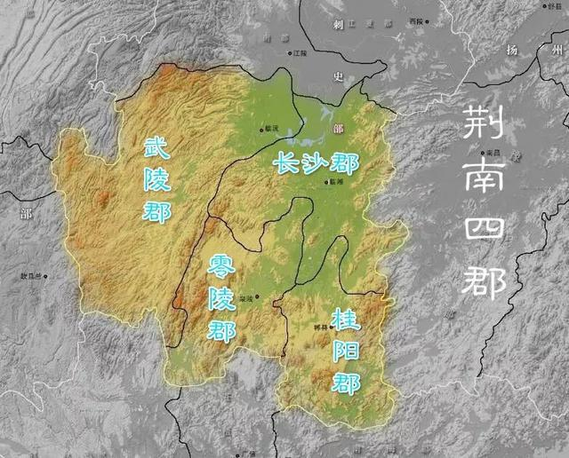
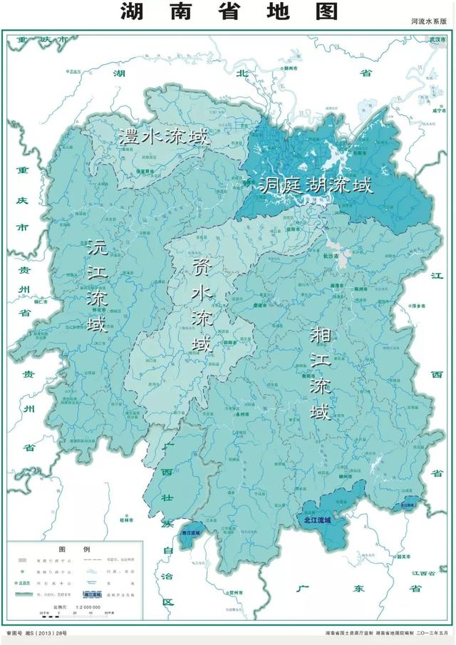
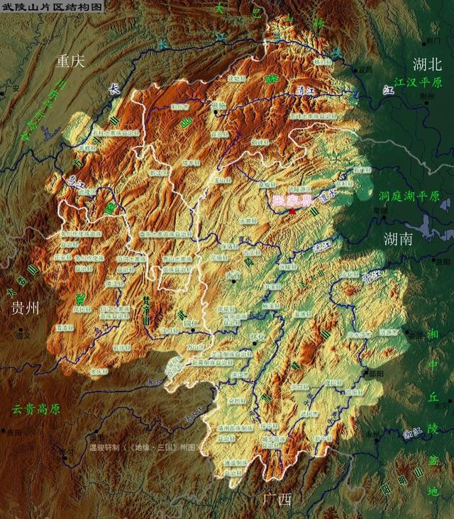
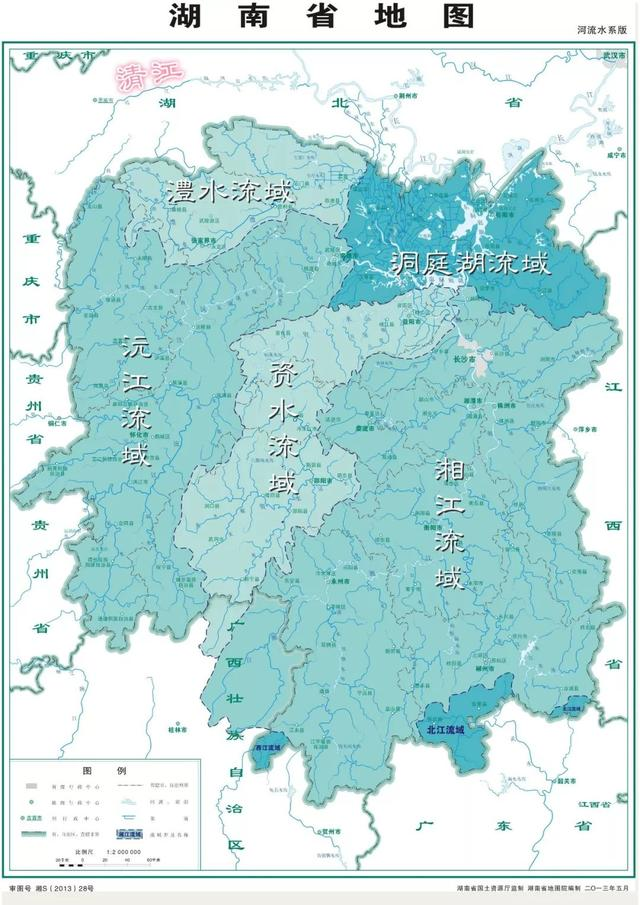

湖南省的地理结构，以及武陵之谜
原创 地缘看世界 2019-08-21 07:31:00

“江南可采莲，莲叶何田田，鱼戏莲叶间。鱼戏莲叶东，鱼戏莲叶西。鱼戏莲叶南，鱼戏莲叶北”。在所有描绘江南的作品中，这首被自汉乐府收录的民歌，几乎可以算得上是鼻祖。时隔2000多年，诗歌中所描绘的芳晨丽景，与后世脑海中所浮现的江南景象依然高度重合。不过且慢！现在释读的板块不是荆州吗？思绪为何又忽而飘到了千里之外的江南。
此时提到“江南”，是因为“江南”的概念本源出荆楚，最初所对应的只是荆江之南的洞庭湖流域。后世所熟知的江南，在秦汉之际的地缘标签则是“江东”。至于“江东”为什么变成了“江南”，在扬州部分已经解读过。
公元前3世纪初，屈原曾经两度被楚王放逐于楚之“江南”，并最终在苦闷、绝望的心情下投汨罗江而亡。不过就楚之江南来说，位置也并不是一成不变的。随着楚国向长江下游地区扩张，鄱阳湖流域亦成为了楚之江南的一部分。
在以荆州成为楚国旧地标签的两汉三国时代，江南一词再次回归最初的设定——洞庭湖流域。在东汉时期，这片江南之地被分割为四个隶属荆州的郡级行政区，分别为：武陵郡、长沙郡、零陵郡，以及桂阳郡。其中长沙郡在西汉时期的建制为“长沙国”（著名的马王堆汉墓就是当时长沙国相利苍及其妻、子的墓葬）。基于它们位于荆州南部及长江之南的位置，此四郡一般被称之为“荆南四郡”或“江南四郡”。为了避免与今之江南想混淆，接下来将使用“荆南四郡”作为它们的标签。

赤壁之战后，刘备曾借曹军败北之机迅速占领荆南四郡，使得自己第一次获得稳定的地盘。在罗贯中笔下，刘备、诸葛亮先是合军攻取了零陵，再分兵拿下了剩余三郡，其中：关羽攻取长沙，收降黄忠、魏延；赵云兵不血刃得了桂阳，并拒绝了太守赵范的寡嫂樊氏；张飞则得了武陵。不过由于罗贯中当时并不了解四郡的方位及荆南地区的山形水势，这个出场顺序实际是有问题的。好在今天的我们，有条件从地理、历史双重角度，复盘当时的情况。
如果说汉之豫章郡所对应的是现在的江西省，那么所谓“荆南四郡”大体对应的就是湖南了。需要注意的是，荆南四郡的范围实际还延伸到了：广东、广西、湖北、重庆、贵州等省市，至于为什么会这样，在后面的内容中，都会一一解答。
首先出场的是位于武陵郡与长沙郡两个与江汉平原相连的行政区——武陵郡与长沙郡。与南郡和江夏郡分处江汉平原两侧相对应的是，武陵郡和长沙郡同样分割了洞庭湖平原。至于零陵郡、桂阳郡，则均处于此二郡之南。由于赤壁之战时，刘备是驻军于鄂东南地区，如果要取荆南四郡的话，显然是应该先取长沙郡，再继续向西、南方向推进。
通过对江汉二郡的解读，一个地缘现象引发了我们的关注，那就是长江虽然在两湖平原境内总计有800公里，并且是上述两大平原的地理分割线，但这段归属长江中游范围内的长江，却没有天然成为一条行政分割线。
南郡和江夏郡分别在洞庭湖以西及幕阜山脉以北，将控制线延伸入了长江南岸。时至今日，情况依然如翻版般的存在，真正充当湖南、湖北两省分界线的，只有洞庭湖所对应的一段长约180公里长江。以此来说，以洞庭湖而不是长江为参照物命名出湖南、湖北两省，倒是十分的贴切。同时也喻示着长江在两湖平原所充当的地缘角色，并非一道天堑。

解读荆南四郡或者说湖南地区的地理密码，并不在于其与长江的关系，而是在于其内部的山形水势。水势是随着山形走的，那些地表突起在帮助关联地区获得更多降水的同时，也决定着水流的方向。
整体来说，湖南的地理位置不似江西那么封闭。造成这种差异的原因，在于其北部没有大别山脉的影响，东西两侧山地在长江沿岸的距离也足够宽。如果说江西的地形更像是一个盆地，那么湖南就是一个北部开口的簸箕形。在东、西、南三个方向为这个簸箕围边的，分别是：西江南丘陵、武陵山区，以及南岭。
关于“西江南丘陵”部分，在江西部分已经做过解读。当下的解读重点是洞庭湖平原之西的“武陵山区”，以及管辖这片山地的“武陵郡”。与大多数行政板块一样，当年武陵郡的范围也包括平原和山地两部分。
其东部的平原部分为“西洞庭平原”，西部的山地部分则被称之为“武陵山区”。当年崛起于西江汉平原的楚人，最先向南征服的便是武陵地区。只不过当时的楚国还没有使用“武陵”一名，而是将之命名为“黔中郡”。后来统一天下的秦国依然继承了这个名称，并进一步扩张了黔中郡的范围。直至西汉开国之后，方改名为“武陵郡”。

顺便说下，“黔中”之名在唐朝曾经以“黔中道”的形式被重新启用。虽然不管是黔中道还是武陵郡，在范围上都地跨了：湖南、湖北、重庆、贵州四省市，并且贵州最终继承了“黔”这个名称，但考虑到柳宗元当时是被贬在湖南南部的永州，他在著名的寓言故事《黔之驴》中所描述的那头驴，应该是在湖南境内被放生并被老虎吃掉的。
唐朝时，武陵山区到底有没有驴还很难说（华南虎是肯定有的），但无论对于最先征服这一地区的楚人，还是对于创立“武陵郡”一名的汉王朝来说，武陵山区实是一片开发价值不大的蛮夷之地。
以至于汉代对分布于这片山地的土著居民，有一个“武陵蛮”的泛称。不过及至东晋之后，武陵山区的形象却因陶渊明的《桃花源记》，变成了世外桃源的所在地。只是无论是被视为蛮夷之地还是世外桃源，背后的推手都是武陵山地的边缘性。
尽管武陵山区的农业开发价值不大，但在区位上却非常重要。地理上，这是一片位于四川盆地、两湖盆地、云贵高原、两广丘陵之间的连片山区；行政上则涉及有：湖南、湖北、重庆、贵州四省市。在两湖盆地纳入中央之国的范畴之后，如果想进一步在西南方向扩张，这片面积相当于一个中等省份的山地，是怎么也绕不过去的。
武陵山片区结构图∨

对于湖南来说，武陵山区同样有着重要意义。很多省份都有一个别样的代称，比如山西的“三晋之地”、河北的“燕赵之地”，而湖南则是被称为“三湘四水”。这当中的“四水”意指哺育了湖南的四条河流。这四条从不同方向注入洞庭湖的河流中，除湘江以外，资江、沅江、澧水的河流都与“武陵”有关。由此可见，不了解武陵和武陵山区就无法解锁湖南。

由于历史、地理原因，确定武陵山区的范围并不是一件简单的事。从地理层面来说，武陵山区的定义应该为：武陵山脉及其延伸山地，问题在于哪里才是武陵山脉。狭义的“武陵山”发源于贵州东北部的铜仁，东北向在湖南境内延伸约300公里，直至消失在湖庭湖平原。
这条绝大部位于湖南境内的山地，西半部为沅江上游的辰水和酉水所覆盖，东部部则为澧水和沅江的分水岭。当下整个武陵山区中最知名的城市——张家界市正位于武陵山北麓。

帮助成就澧水与沅江的这条“武陵山”并不是武陵山地的全部，与其西北部那些被统称为“武陵山区”的山地相比。这条“武陵山”甚至可以说是体量最小的一条。
然而这其实也是个优势，对于力量渺小的人类来说，那些高大山脉的延伸部分，反而更容易进行开发及承载人口。与江汉平原一样，洞庭湖平原原也极易遭遇水患。这使得无论自先秦直至两汉三国时，无论是武陵郡还是长沙郡，绝大多数城邑都是设立在有山地、丘陵可依的河谷，而不是洞庭湖平原腹地。
位置最靠近江汉平原的澧、沅两水，尤其是靠近山地部分，很自然的成为了地缘中心（大部分县级行政区都设置于此）。
然而回归地理层面，这条武陵山却又显得非常的弱势。武陵山区整体上可以视为云贵高原的延伸，其主脉自乌江下游开始，沿长江东南岸向东北方向一路延伸至长江三峡。这部分高地之所以没被认定为高原，是因为其具备明显的山脉特征。
你很容易在地形图上感受到，整个山区是由一系列“西南-东北”向走势的山地纠合在一起所组成的。相比之下，云贵高原核心部分顶面的地势要平缓的多，虽然也被河流切割出许多深谷，但仍保留着相对平整的高原面。

遵循着中间高、两侧低的地理规律，武陵山脉在两侧亦衍生出了大片密度和高度较低的山体。在山脉的西侧，那些衍生山地的分布异常有规律。如果说武陵山主脉的结构，就像是一把纠缠在一起的湿面条，那么这些分布在四川盆地东部，总计有30多条的山体，就好像把一根根的面条平行排列在了盆地腹地。
基于这一形态，这片山地被命名为“川东平行岭谷”。当下这片岭谷除西北部为四川所有以外，大部成为了重庆市的核心部分（重庆主城区位于岭谷南端）。

由于长江的分割及地势的明显差异，川东平行岭谷在地理、地缘上都没有被归入武陵山区。不过在武陵山脉的东部，也就是湖南方向情况就有所不同了。你会发现武陵山脉在这个方向上，海拔并没有出现像在四川盆地方向那样的骤降现象，而是呈缓慢下降的趋势。
这种走势所带来的地理影响就是：武陵山区所收集到的雨水，大部分都向东注入了两湖盆地的江南地区。除了刚才提到的澧水、沅江、资江这三条为洞庭湖平原和湖南作出贡献的河流以外，在整个山地的北部还有一条发源于湖北恩施地区，横穿整个山地北部，从宜昌之南接入长江的河流——清江。

由于一出山地就接入长江，清江所辐射的山地并不属于洞庭湖流域的一部分。基于湖北地区在两湖平原的强势地位，以及控制长江三峡的需要（三峡为通往四川盆地的主通道），无论是在两汉三国时期还是现在，清江流域在行政上都与江汉平原的捆绑在一起。当下，这一地区在行政上为宜昌和恩施两地区所辖，在湖北内部被称之为鄂西南。而在我们正在推进的时代，清江流域则是南郡的组成部分。

流域属性使得武陵山区的命运更多与两湖地区，尤其是湖南捆绑在一起。当然，也并不是所有与武陵山区有关的河流，都是向东流淌。在武陵山脉的南端，源出贵州高原西部的乌江，在横穿整个高原腹地之后就没有继续东流，而是在贵州东部遇到一座海拔2493米山峰——梵净山之后（铜仁境内），转而向北切割武陵山地，并最终从位于重庆主城区东北部的涪陵区（注意这个字念fú不念péi，并且吃方便面时放涪陵榨菜太咸了！）汇入长江。
乌江的这种流向，使得它下游地区与四川盆地东部的在地缘上的结合更为紧密。并导致重庆在建市之时，能够因这层地理、地缘关系，在武陵山脉延伸出一个触角。仔细观察重庆的轮廓，会发现有如一个变形的“人”字。
重庆地形图∨

而这个“人”字的一捺就是以乌江下游为核心的武陵山区了（一撇则主要为“川东平行岭谷”部分）。基于同样的原因，这部分隶属于重庆的武陵山地，在当年亦没有成为武陵郡和荆州的一部分，而是归属了益州治下的巴郡。

如果没有梵净山的阻挡，乌江很有可能会与沅江上游的辰水相连，变成洞庭湖水系的一部分。这样的话，今天的重庆估计就很难介入武陵山区了。值得注意的是，梵净山不仅是乌江与沅江分水岭，还可以被视为武陵山地的起点，以及与云贵高原的分割点。正是在这座佛教圣地以东、以北地区，地球的隆起开始呈现出明显的山脉走势。
梵净山∨

综上所述，我们可以对武陵山区的结构做一个概括：整个山区是由一系列起于梵净山、止于三峡，西以长江为界，东至洞庭湖平原的，东北走向山体纠结而成。其整体呈现出西高东低的走势，西侧最密集、海拔最高的主脉部分，成为了湖北、重庆、贵州三省市武陵山区的主体。反观湖南部分不仅海拔更低，而且山脉间的河谷也更为开阔。
换句话说，之前说的到狭义“武陵山”及其周边山地，在地理层面上其实只是武陵山脉的延伸部分，甚至可以说是武陵山脉最边缘、体量最小的一条山体。尽管如此，基于历史、地缘原因，湖南“武陵山”及其周边地区，反倒是最有资格继承“武陵”之名。
武陵山片区结构图∨

不过这并不代表武陵山区的其它地区，就不会觊觎与“武陵”相关的地缘遗产了。比如重庆方面就在乌江下游开发了名为“武陵山大峡谷”的旅游景区；而最有经济价值的“桃花源”，更是在湖南、重庆、贵州所属的武陵山地中，都有所“发现”。
21世纪初，中国政府将武陵山区列入了14个“集中连片特困地区”，并加以政策帮扶。表面看，这个善意之举第一次让整个“武陵山区”拥有了自己的行政边界。
以这个基于地理、地缘关系，并带有行政偏差的归纳法来说，能够被称之为“武陵山区”的行政区计有有：隶属湖北省宜昌市、恩施土家族苗族自治州的11个县级行政区；隶属湖南省邵阳市、常德市、张家界市、益阳市的37个县级行政区；隶属重庆市的7个区县；以及隶属贵州省遵义市、铜仁市的16个县级行政区。为了将之与地理上的“武陵山区”区别开来，我们可以将之称为“武陵山片区”。
整体来说，武陵山片区的归纳法还是比较属合地理背景的。其与汉之武陵郡所指向的“武陵山地”部分的区别主要有二：一是让乌江下游那部分，在汉代未划入武陵郡、当下基本为重庆所有的山地，回归了“武陵”的范畴；二是在东南方向，将武陵山和沅江之南的雪峰山地区，也纳入了“武陵山片区”。
相比之下，后者在地理、地缘上所造成的争议要更大。至于为什么这样说，我们下一节再接着解读。